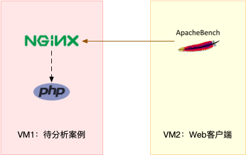
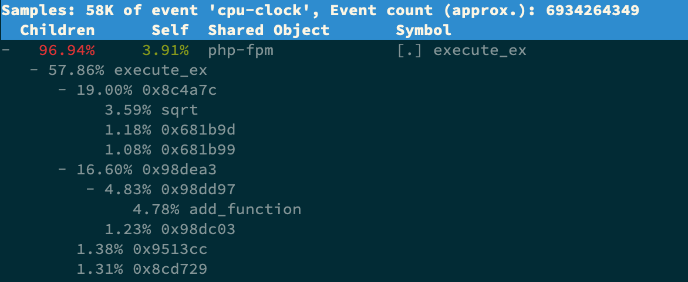

- 00 开篇词 别再让Linux性能问题成为你的绊脚石.md.html
- 01 如何学习Linux性能优化？.md.html
- 02 基础篇：到底应该怎么理解“平均负载”？.md.html
- 03 基础篇：经常说的 CPU 上下文切换是什么意思？（上）.md.html
- 04 基础篇：经常说的 CPU 上下文切换是什么意思？（下）.md.html
- 05 基础篇：某个应用的CPU使用率居然达到100%，我该怎么办？.md.html
- 06 案例篇：系统的 CPU 使用率很高，但为啥却找不到高 CPU 的应用？.md.html
- 07 案例篇：系统中出现大量不可中断进程和僵尸进程怎么办？（上）.md.html
- 08 案例篇：系统中出现大量不可中断进程和僵尸进程怎么办？（下）.md.html
- 09 基础篇：怎么理解Linux软中断？.md.html
- 10 案例篇：系统的软中断CPU使用率升高，我该怎么办？.md.html
- 11 套路篇：如何迅速分析出系统CPU的瓶颈在哪里？.md.html
- 12 套路篇：CPU 性能优化的几个思路.md.html
- 13 答疑（一）：无法模拟出 RES 中断的问题，怎么办？.md.html
- 14 答疑（二）：如何用perf工具分析Java程序？.md.html
- 15 基础篇：Linux内存是怎么工作的？.md.html
- 16 基础篇：怎么理解内存中的Buffer和Cache？.md.html
- 17 案例篇：如何利用系统缓存优化程序的运行效率？.md.html
- 18 案例篇：内存泄漏了，我该如何定位和处理？.md.html
- 19 案例篇：为什么系统的Swap变高了（上）.md.html
- 20 案例篇：为什么系统的Swap变高了？（下）.md.html
- 21 套路篇：如何“快准狠”找到系统内存的问题？.md.html
- 22 答疑（三）：文件系统与磁盘的区别是什么？.md.html
- 23 基础篇：Linux 文件系统是怎么工作的？.md.html
- 24 基础篇：Linux 磁盘I_O是怎么工作的（上）.md.html
- 25 基础篇：Linux 磁盘I_O是怎么工作的（下）.md.html
- 26 案例篇：如何找出狂打日志的“内鬼”？.md.html
- 27 案例篇：为什么我的磁盘I_O延迟很高？.md.html
- 28 案例篇：一个SQL查询要15秒，这是怎么回事？.md.html
- 29 案例篇：Redis响应严重延迟，如何解决？.md.html
- 30 套路篇：如何迅速分析出系统I_O的瓶颈在哪里？.md.html
- 31 套路篇：磁盘 I_O 性能优化的几个思路.md.html
- 32 答疑（四）：阻塞、非阻塞 I_O 与同步、异步 I_O 的区别和联系.md.html
- 33 关于 Linux 网络，你必须知道这些（上）.md.html
- 34 关于 Linux 网络，你必须知道这些（下）.md.html
- 35 基础篇：C10K 和 C1000K 回顾.md.html
- 36 套路篇：怎么评估系统的网络性能？.md.html
- 37 案例篇：DNS 解析时快时慢，我该怎么办？.md.html
- 38 案例篇：怎么使用 tcpdump 和 Wireshark 分析网络流量？.md.html
- 39 案例篇：怎么缓解 DDoS 攻击带来的性能下降问题？.md.html
- 40 案例篇：网络请求延迟变大了，我该怎么办？.md.html
- 41 案例篇：如何优化 NAT 性能？（上）.md.html
- 42 案例篇：如何优化 NAT 性能？（下）.md.html
- 43 套路篇：网络性能优化的几个思路（上）.md.html
- 44 套路篇：网络性能优化的几个思路（下）.md.html
- 45 答疑（五）：网络收发过程中，缓冲区位置在哪里？.md.html
- 46 案例篇：为什么应用容器化后，启动慢了很多？.md.html
- 47 案例篇：服务器总是时不时丢包，我该怎么办？（上）.md.html
- 48 案例篇：服务器总是时不时丢包，我该怎么办？（下）.md.html
- 49 案例篇：内核线程 CPU 利用率太高，我该怎么办？.md.html
- 50 案例篇：动态追踪怎么用？（上）.md.html
- 51 案例篇：动态追踪怎么用？（下）.md.html
- 52 案例篇：服务吞吐量下降很厉害，怎么分析？.md.html
- 53 套路篇：系统监控的综合思路.md.html
- 54 套路篇：应用监控的一般思路.md.html
- 55 套路篇：分析性能问题的一般步骤.md.html
- 56 套路篇：优化性能问题的一般方法.md.html
- 57 套路篇：Linux 性能工具速查.md.html
- 58 答疑（六）：容器冷启动如何性能分析？.md.html
- 加餐（一） 书单推荐：性能优化和Linux 系统原理.md.html
- 加餐（二） 书单推荐：网络原理和 Linux 内核实现.md.html
- 用户故事 “半路出家 ”，也要顺利拿下性能优化！.md.html
- 用户故事 运维和开发工程师们怎么说？.md.html
- 结束语 愿你攻克性能难关.md.html
- 捐赠
05 基础篇：某个应用的CPU使用率居然达到100%，我该怎么办？
你好，我是倪朋飞。
通过前两节对平均负载和 CPU 上下文切换的学习，我相信你对 CPU 的性能已经有了初步了解。不过我还是想问一下，在学这个专栏前，你最常用什么指标来描述系统的 CPU 性能呢？我想你的答案，可能不是平均负载，也不是 CPU 上下文切换，而是另一个更直观的指标—— CPU 使用率。
我们前面说过，CPU 使用率是单位时间内 CPU 使用情况的统计，以百分比的方式展示。那么，作为最常用也是最熟悉的 CPU 指标，你能说出 CPU 使用率到底是怎么算出来的吗？再有，诸如 top、ps 之类的性能工具展示的 %user、%nice、 %system、%iowait 、%steal 等等，你又能弄清楚它们之间的不同吗？
今天我就带你了解 CPU 使用率的内容，同时，我也会以我们最常用的反向代理服务器 Nginx 为例，带你在一步步操作和分析中深入理解。
CPU 使用率
在上一期我曾提到，Linux 作为一个多任务操作系统，将每个 CPU 的时间划分为很短的时间片，再通过调度器轮流分配给各个任务使用，因此造成多任务同时运行的错觉。
为了维护 CPU 时间，Linux 通过事先定义的节拍率（内核中表示为 HZ），触发时间中断，并使用全局变量 Jiffies 记录了开机以来的节拍数。每发生一次时间中断，Jiffies 的值就加 1。
节拍率 HZ 是内核的可配选项，可以设置为 100、250、1000 等。不同的系统可能设置不同数值，你可以通过查询 /boot/config 内核选项来查看它的配置值。比如在我的系统中，节拍率设置成了 250，也就是每秒钟触发 250 次时间中断。
$ grep 'CONFIG_HZ=' /boot/config-$(uname -r)
CONFIG_HZ=250
同时，正因为节拍率 HZ 是内核选项，所以用户空间程序并不能直接访问。为了方便用户空间程序，内核还提供了一个用户空间节拍率 USER_HZ，它总是固定为 100，也就是1/100秒。这样，用户空间程序并不需要关心内核中 HZ 被设置成了多少，因为它看到的总是固定值 USER_HZ。
Linux 通过 /proc 虚拟文件系统，向用户空间提供了系统内部状态的信息，而 /proc/stat 提供的就是系统的 CPU 和任务统计信息。比方说，如果你只关注 CPU 的话，可以执行下面的命令：
# 只保留各个CPU的数据
$ cat /proc/stat | grep ^cpu
cpu 280580 7407 286084 172900810 83602 0 583 0 0 0
cpu0 144745 4181 176701 86423902 52076 0 301 0 0 0
cpu1 135834 3226 109383 86476907 31525 0 282 0 0 0
这里的输出结果是一个表格。其中，第一列表示的是 CPU 编号，如cpu0、cpu1 ，而第一行没有编号的 cpu ，表示的是所有 CPU 的累加。其他列则表示不同场景下 CPU 的累加节拍数，它的单位是 USER_HZ，也就是 10 ms（1/100秒），所以这其实就是不同场景下的 CPU 时间。
当然，这里每一列的顺序并不需要你背下来。你只要记住，有需要的时候，查询 man proc 就可以。不过，你要清楚man proc文档里每一列的涵义，它们都是CPU使用率相关的重要指标，你还会在很多其他的性能工具中看到它们。下面，我来依次解读一下。
user（通常缩写为 us），代表用户态 CPU 时间。注意，它不包括下面的 nice 时间，但包括了 guest 时间。
nice（通常缩写为 ni），代表低优先级用户态 CPU 时间，也就是进程的 nice 值被调整为 1-19 之间时的 CPU 时间。这里注意，nice 可取值范围是 -20 到 19，数值越大，优先级反而越低。
system（通常缩写为sys），代表内核态 CPU 时间。
idle（通常缩写为id），代表空闲时间。注意，它不包括等待 I/O 的时间（iowait）。
iowait（通常缩写为 wa），代表等待 I/O 的 CPU 时间。
irq（通常缩写为 hi），代表处理硬中断的 CPU 时间。
softirq（通常缩写为 si），代表处理软中断的 CPU 时间。
steal（通常缩写为 st），代表当系统运行在虚拟机中的时候，被其他虚拟机占用的 CPU 时间。
guest（通常缩写为 guest），代表通过虚拟化运行其他操作系统的时间，也就是运行虚拟机的 CPU 时间。
guest_nice（通常缩写为 gnice），代表以低优先级运行虚拟机的时间。
而我们通常所说的 CPU 使用率，就是除了空闲时间外的其他时间占总 CPU 时间的百分比，用公式来表示就是：
- 根据这个公式，我们就可以从 /proc/stat 中的数据，很容易地计算出 CPU 使用率。当然，也可以用每一个场景的CPU时间，除以总的CPU时间，计算出每个场景的CPU使用率。
不过先不要着急计算，你能说出，直接用 /proc/stat 的数据，算的是什么时间段的 CPU 使用率吗？
看到这里，你应该想起来了，这是开机以来的节拍数累加值，所以直接算出来的，是开机以来的平均 CPU 使用率，一般没啥参考价值。
事实上，为了计算 CPU 使用率，性能工具一般都会取间隔一段时间（比如3秒）的两次值，作差后，再计算出这段时间内的平均 CPU 使用率，即
这个公式，就是我们用各种性能工具所看到的CPU 使用率的实际计算方法。
现在，我们知道了系统 CPU 使用率的计算方法，那进程的呢？跟系统的指标类似，Linux 也给每个进程提供了运行情况的统计信息，也就是 /proc/[pid]/stat。不过，这个文件包含的数据就比较丰富了，总共有 52 列的数据。
当然，不用担心，因为你并不需要掌握每一列的含义。还是那句话，需要的时候，查 man proc 就行。
回过头来看，是不是说要查看 CPU 使用率，就必须先读取 /proc/stat 和 /proc/[pid]/stat 这两个文件，然后再按照上面的公式计算出来呢？
当然不是，各种各样的性能分析工具已经帮我们计算好了。不过要注意的是，性能分析工具给出的都是间隔一段时间的平均 CPU 使用率，所以要注意间隔时间的设置，特别是用多个工具对比分析时，你一定要保证它们用的是相同的间隔时间。
比如，对比一下 top 和 ps 这两个工具报告的 CPU 使用率，默认的结果很可能不一样，因为 top 默认使用 3 秒时间间隔，而 ps 使用的却是进程的整个生命周期。
怎么查看 CPU 使用率
知道了 CPU 使用率的含义后，我们再来看看要怎么查看 CPU 使用率。说到查看 CPU 使用率的工具，我猜你第一反应肯定是 top 和 ps。的确，top 和 ps 是最常用的性能分析工具：
top 显示了系统总体的 CPU 和内存使用情况，以及各个进程的资源使用情况。
ps 则只显示了每个进程的资源使用情况。
比如，top 的输出格式为：
# 默认每3秒刷新一次
$ top
top - 11:58:59 up 9 days, 22:47, 1 user, load average: 0.03, 0.02, 0.00
Tasks: 123 total, 1 running, 72 sleeping, 0 stopped, 0 zombie
%Cpu(s): 0.3 us, 0.3 sy, 0.0 ni, 99.3 id, 0.0 wa, 0.0 hi, 0.0 si, 0.0 st
KiB Mem : 8169348 total, 5606884 free, 334640 used, 2227824 buff/cache
KiB Swap: 0 total, 0 free, 0 used. 7497908 avail Mem
PID USER PR NI VIRT RES SHR S %CPU %MEM TIME+ COMMAND
1 root 20 0 78088 9288 6696 S 0.0 0.1 0:16.83 systemd
2 root 20 0 0 0 0 S 0.0 0.0 0:00.05 kthreadd
4 root 0 -20 0 0 0 I 0.0 0.0 0:00.00 kworker/0:0H
...
这个输出结果中，第三行 %Cpu 就是系统的 CPU 使用率，具体每一列的含义上一节都讲过，只是把CPU时间变换成了CPU使用率，我就不再重复讲了。不过需要注意，top 默认显示的是所有 CPU 的平均值，这个时候你只需要按下数字 1 ，就可以切换到每个 CPU 的使用率了。
继续往下看，空白行之后是进程的实时信息，每个进程都有一个 %CPU 列，表示进程的 CPU 使用率。它是用户态和内核态 CPU 使用率的总和，包括进程用户空间使用的 CPU、通过系统调用执行的内核空间 CPU 、以及在就绪队列等待运行的 CPU。在虚拟化环境中，它还包括了运行虚拟机占用的 CPU。
所以，到这里我们可以发现， top 并没有细分进程的用户态CPU和内核态 CPU。那要怎么查看每个进程的详细情况呢？你应该还记得上一节用到的 pidstat 吧，它正是一个专门分析每个进程 CPU 使用情况的工具。
比如，下面的pidstat命令，就间隔1秒展示了进程的5组CPU使用率，包括：
用户态CPU使用率 （%usr）；
内核态CPU使用率（%system）；
运行虚拟机CPU使用率（%guest）；
等待 CPU使用率（%wait）；
以及总的CPU使用率（%CPU）。
最后的 Average 部分，还计算了 5 组数据的平均值。
# 每隔1秒输出一组数据，共输出5组
$ pidstat 1 5
15:56:02 UID PID %usr %system %guest %wait %CPU CPU Command
15:56:03 0 15006 0.00 0.99 0.00 0.00 0.99 1 dockerd
...
Average: UID PID %usr %system %guest %wait %CPU CPU Command
Average: 0 15006 0.00 0.99 0.00 0.00 0.99 - dockerd
CPU 使用率过高怎么办？
通过 top、ps、pidstat 等工具，你能够轻松找到 CPU 使用率较高（比如 100% ）的进程。接下来，你可能又想知道，占用 CPU 的到底是代码里的哪个函数呢？找到它，你才能更高效、更针对性地进行优化。
我猜你第一个想到的，应该是 GDB（The GNU Project Debugger）， 这个功能强大的程序调试利器。的确，GDB 在调试程序错误方面很强大。但是，我又要来“挑刺”了。请你记住，GDB 并不适合在性能分析的早期应用。
为什么呢？因为 GDB 调试程序的过程会中断程序运行，这在线上环境往往是不允许的。所以，GDB 只适合用在性能分析的后期，当你找到了出问题的大致函数后，线下再借助它来进一步调试函数内部的问题。
那么哪种工具适合在第一时间分析进程的 CPU 问题呢？我的推荐是 perf。perf 是 Linux 2.6.31 以后内置的性能分析工具。它以性能事件采样为基础，不仅可以分析系统的各种事件和内核性能，还可以用来分析指定应用程序的性能问题。
使用 perf 分析 CPU 性能问题，我来说两种最常见、也是我最喜欢的用法。
第一种常见用法是 perf top，类似于 top，它能够实时显示占用 CPU 时钟最多的函数或者指令，因此可以用来查找热点函数，使用界面如下所示：
$ perf top
Samples: 833 of event 'cpu-clock', Event count (approx.): 97742399
Overhead Shared Object Symbol
7.28% perf [.] 0x00000000001f78a4
4.72% [kernel] [k] vsnprintf
4.32% [kernel] [k] module_get_kallsym
3.65% [kernel] [k] _raw_spin_unlock_irqrestore
...
输出结果中，第一行包含三个数据，分别是采样数（Samples）、事件类型（event）和事件总数量（Event count）。比如这个例子中，perf 总共采集了 833 个 CPU 时钟事件，而总事件数则为 97742399。
另外，采样数需要我们特别注意。如果采样数过少（比如只有十几个），那下面的排序和百分比就没什么实际参考价值了。
再往下看是一个表格式样的数据，每一行包含四列，分别是：
第一列 Overhead ，是该符号的性能事件在所有采样中的比例，用百分比来表示。
第二列 Shared ，是该函数或指令所在的动态共享对象（Dynamic Shared Object），如内核、进程名、动态链接库名、内核模块名等。
第三列 Object ，是动态共享对象的类型。比如 [.] 表示用户空间的可执行程序、或者动态链接库，而 [k] 则表示内核空间。
最后一列 Symbol 是符号名，也就是函数名。当函数名未知时，用十六进制的地址来表示。
还是以上面的输出为例，我们可以看到，占用 CPU 时钟最多的是 perf 工具自身，不过它的比例也只有 7.28%，说明系统并没有 CPU 性能问题。 perf top的使用你应该很清楚了吧。
接着再来看第二种常见用法，也就是 perf record 和 perf report。 perf top 虽然实时展示了系统的性能信息，但它的缺点是并不保存数据，也就无法用于离线或者后续的分析。而 perf record 则提供了保存数据的功能，保存后的数据，需要你用 perf report 解析展示。
$ perf record # 按Ctrl+C终止采样
[ perf record: Woken up 1 times to write data ]
[ perf record: Captured and wrote 0.452 MB perf.data (6093 samples) ]
$ perf report # 展示类似于perf top的报告
在实际使用中，我们还经常为 perf top 和 perf record 加上 -g 参数，开启调用关系的采样，方便我们根据调用链来分析性能问题。
案例
下面我们就以 Nginx + PHP 的 Web 服务为例，来看看当你发现 CPU 使用率过高的问题后，要怎么使用 top 等工具找出异常的进程，又要怎么利用 perf 找出引发性能问题的函数。
你的准备
以下案例基于 Ubuntu 18.04，同样适用于其他的 Linux 系统。我使用的案例环境如下所示：
机器配置：2 CPU，8GB 内存
预先安装 docker、sysstat、perf、ab 等工具，如 apt install docker.io sysstat linux-tools-common apache2-utils
我先简单介绍一下这次新使用的工具 ab。ab（apache bench）是一个常用的 HTTP 服务性能测试工具，这里用来模拟 Ngnix 的客户端。由于 Nginx 和 PHP 的配置比较麻烦，我把它们打包成了两个 Docker 镜像，这样只需要运行两个容器，就可以得到模拟环境。
注意，这个案例要用到两台虚拟机，如下图所示：

你可以看到，其中一台用作 Web 服务器，来模拟性能问题；另一台用作 Web 服务器的客户端，来给 Web 服务增加压力请求。使用两台虚拟机是为了相互隔离，避免“交叉感染”。
接下来，我们打开两个终端，分别 SSH 登录到两台机器上，并安装上面提到的工具。
还是同样的“配方”。下面的所有命令，都默认假设以 root 用户运行，如果你是普通用户身份登陆系统，一定要先运行 sudo su root 命令切换到 root 用户。到这里，准备工作就完成了。
不过，操作之前，我还想再说一点。这次案例中 PHP 应用的核心逻辑比较简单，大部分人一眼就可以看出问题，但你要知道，实际生产环境中的源码就复杂多了。
所以，我希望你在按照步骤操作之前，先不要查看源码（避免先入为主），而是把它当成一个黑盒来分析。这样，你可以更好地理解整个解决思路，怎么从系统的资源使用问题出发，分析出瓶颈所在的应用、以及瓶颈在应用中的大概位置。
操作和分析
接下来，我们正式进入操作环节。
首先，在第一个终端执行下面的命令来运行 Nginx 和 PHP 应用：
$ docker run --name nginx -p 10000:80 -itd feisky/nginx
$ docker run --name phpfpm -itd --network container:nginx feisky/php-fpm
然后，在第二个终端使用 curl 访问 http://[VM1的IP]:10000，确认 Nginx 已正常启动。你应该可以看到 It works! 的响应。
# 192.168.0.10是第一台虚拟机的IP地址
$ curl http://192.168.0.10:10000/
It works!
接着，我们来测试一下这个 Nginx 服务的性能。在第二个终端运行下面的 ab 命令：
# 并发10个请求测试Nginx性能，总共测试100个请求
$ ab -c 10 -n 100 http://192.168.0.10:10000/
This is ApacheBench, Version 2.3 <$Revision: 1706008 $>
Copyright 1996 Adam Twiss, Zeus Technology Ltd,
...
Requests per second: 11.63 [#/sec] (mean)
Time per request: 859.942 [ms] (mean)
...
从ab的输出结果我们可以看到，Nginx能承受的每秒平均请求数只有 11.63。你一定在吐槽，这也太差了吧。那到底是哪里出了问题呢？我们用 top 和 pidstat 再来观察下。
这次，我们在第二个终端，将测试的请求总数增加到 10000。这样当你在第一个终端使用性能分析工具时， Nginx 的压力还是继续。
继续在第二个终端，运行 ab 命令：
$ ab -c 10 -n 10000 http://192.168.0.10:10000/
接着，回到第一个终端运行 top 命令，并按下数字 1 ，切换到每个 CPU 的使用率：
$ top
...
%Cpu0 : 98.7 us, 1.3 sy, 0.0 ni, 0.0 id, 0.0 wa, 0.0 hi, 0.0 si, 0.0 st
%Cpu1 : 99.3 us, 0.7 sy, 0.0 ni, 0.0 id, 0.0 wa, 0.0 hi, 0.0 si, 0.0 st
...
PID USER PR NI VIRT RES SHR S %CPU %MEM TIME+ COMMAND
21514 daemon 20 0 336696 16384 8712 R 41.9 0.2 0:06.00 php-fpm
21513 daemon 20 0 336696 13244 5572 R 40.2 0.2 0:06.08 php-fpm
21515 daemon 20 0 336696 16384 8712 R 40.2 0.2 0:05.67 php-fpm
21512 daemon 20 0 336696 13244 5572 R 39.9 0.2 0:05.87 php-fpm
21516 daemon 20 0 336696 16384 8712 R 35.9 0.2 0:05.61 php-fpm
这里可以看到，系统中有几个 php-fpm 进程的 CPU 使用率加起来接近 200%；而每个 CPU 的用户使用率（us）也已经超过了 98%，接近饱和。这样，我们就可以确认，正是用户空间的 php-fpm 进程，导致CPU 使用率骤升。
那再往下走，怎么知道是 php-fpm 的哪个函数导致了 CPU 使用率升高呢？我们来用 perf 分析一下。在第一个终端运行下面的perf命令：
# -g开启调用关系分析，-p指定php-fpm的进程号21515
$ perf top -g -p 21515
按方向键切换到 php-fpm，再按下回车键展开 php-fpm 的调用关系，你会发现，调用关系最终到了 sqrt 和 add_function。看来，我们需要从这两个函数入手了。

我们拷贝出 Nginx 应用的源码，看看是不是调用了这两个函数：
# 从容器phpfpm中将PHP源码拷贝出来
$ docker cp phpfpm:/app .
# 使用grep查找函数调用
$ grep sqrt -r app/ #找到了sqrt调用
app/index.php: $x += sqrt($x);
$ grep add_function -r app/ #没找到add_function调用，这其实是PHP内置函数
OK，原来只有 sqrt 函数在 app/index.php 文件中调用了。那最后一步，我们就该看看这个文件的源码了：
$ cat app/index.php
<?php
// test only.
$x = 0.0001;
for ($i = 0; $i <= 1000000; $i++) {
$x += sqrt($x);
}
echo "It works!"
呀，有没有发现问题在哪里呢？我想你要笑话我了，居然犯了一个这么傻的错误，测试代码没删就直接发布应用了。为了方便你验证优化后的效果，我把修复后的应用也打包成了一个Docker镜像，你可以在第一个终端中执行下面的命令来运行它：
# 停止原来的应用
$ docker rm -f nginx phpfpm
# 运行优化后的应用
$ docker run --name nginx -p 10000:80 -itd feisky/nginx:cpu-fix
$ docker run --name phpfpm -itd --network container:nginx feisky/php-fpm:cpu-fix
接着，到第二个终端来验证一下修复后的效果。首先Ctrl+C停止之前的ab命令后，再运行下面的命令：
$ ab -c 10 -n 10000 http://10.240.0.5:10000/
...
Complete requests: 10000
Failed requests: 0
Total transferred: 1720000 bytes
HTML transferred: 90000 bytes
Requests per second: 2237.04 [#/sec] (mean)
Time per request: 4.470 [ms] (mean)
Time per request: 0.447 [ms] (mean, across all concurrent requests)
Transfer rate: 375.75 [Kbytes/sec] received
...
从这里你可以发现，现在每秒的平均请求数，已经从原来的11变成了2237。
你看，就是这么很傻的一个小问题，却会极大的影响性能，并且查找起来也并不容易吧。当然，找到问题后，解决方法就简单多了，删除测试代码就可以了。
小结
CPU 使用率是最直观和最常用的系统性能指标，更是我们在排查性能问题时，通常会关注的第一个指标。所以我们更要熟悉它的含义，尤其要弄清楚用户（%user）、Nice（%nice）、系统（%system） 、等待 I/O（%iowait） 、中断（%irq）以及软中断（%softirq）这几种不同 CPU 的使用率。比如说：
用户 CPU 和 Nice CPU 高，说明用户态进程占用了较多的 CPU，所以应该着重排查进程的性能问题。
系统 CPU 高，说明内核态占用了较多的 CPU，所以应该着重排查内核线程或者系统调用的性能问题。
I/O 等待 CPU 高，说明等待 I/O 的时间比较长，所以应该着重排查系统存储是不是出现了 I/O 问题。
软中断和硬中断高，说明软中断或硬中断的处理程序占用了较多的 CPU，所以应该着重排查内核中的中断服务程序。
碰到 CPU 使用率升高的问题，你可以借助 top、pidstat 等工具，确认引发 CPU 性能问题的来源；再使用 perf 等工具，排查出引起性能问题的具体函数。
思考
最后，我想邀请你一起来聊聊，你所理解的 CPU 使用率，以及在发现 CPU 使用率升高时，你又是怎么分析的呢？你可以结合今天的内容，和你自己的操作记录，来总结思路。
欢迎在留言区和我讨论，也欢迎把这篇文章分享给你的同事、朋友。我们一起在实战中演练，在交流中进步。

© 2019 - 2023 Liangliang Lee. Powered by gin and hexo-theme-book.